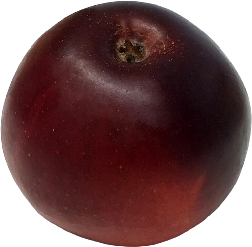

I / Услуги
Начнём с вашей задачи.

01
Разговор, который ведёт к делу
Помогаем клиенту получить ответ, выбрать подходящий вариант и оставить заявку. Сложный вопрос передаётся сотруднику вместе с контекстом разговора.
Обсудить задачу ↗I / Услуги

01
Помогаем клиенту получить ответ, выбрать подходящий вариант и оставить заявку. Сложный вопрос передаётся сотруднику вместе с контекстом разговора.
Обсудить задачу ↗